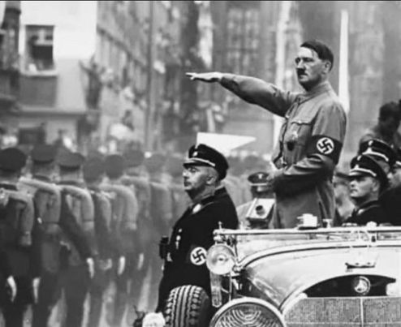
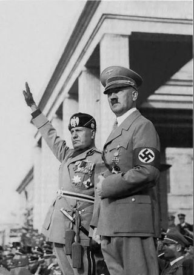

ნაციზმი
გიორგი ჩერქეზია
შესავალი
ნაშრომში განხილულია რაში მდგომარეობდა ნაციზმის იდეოლოგიის დნაშაულებები. კვლევის ჰიპოთეზა მდგომარეობს იმაში, რომ ნაცისტების მიერ განხორციელებული რასისტული ქმედებები აუცილებელი იყო გერმანიის გაძლიერებისთვის, რადგან ამ პერიოდში გერმანია განიცდიდა ძლიერ ეონომიკურ კრიზისს, ხოლო მდიდარ ფენას ებრაელები წარმოადგენდნენ, ამ ქონების მოსაპოვებლად საჭირო იყო რაიმე გზების გამონახვა. ჰიტლერმა კარგად გამოიყენა ქვეყანაში არსებული სიძულვილი ებრაელების მიმართ, მან მოახერხა და ხალხს ჩაუნერგა განცდა, რომ იყვნენ არიული რასის წარმომადგენლები და თავისივე ქვეყანაში ებრაელები „ჩაგრავდნენ“ რადგან მათ ხელში იყო კაპიტალის დიდი ნაწილი.
ნაციზმის იდეოლოგია
ნაციზმისი არის ფაშიზმის უკიდურესად ექსტრემისტული ფორმა,ის არის უკიდურესად მემარჯვენე პარტიების პოლიტიკური მოძრაობა და იდეოლოგია, რომლისთვისაც დამახასიათებელია რადიკალური ნაციონალიზმი და რასიზმი, ერთპარტიული მმართველობა,ტერორი და მკაცრი ცენზურა. მისი მიზანია ოპოზიციის იძულებითი დამორჩილება და ტოტალიტარული კონტროლი საზოგადოებაზე, პოლიტიკურ სისტემასა და ეკონომიკაზე, როგორც იდეოლოგია თავის თავში გულისხმობდა სხვადასხვა ელემნტებს სოციალიზმის, ნაციზმის, რასიზმის, ანტისემიტიზმის და ფაშიზმის.
ნაციზმის იდეოლოგიის ძირითადი ელემენტები:
1.ეროვნული სოციალური პროგრამა 2.რასიზმი 3.განსაკუთრებული ანტისემიტიზმი რომელიც დაგვირგვინდა ჰოლოკოსტით 4.რწმენა უპირატესობის შესახებ, არიული რასის არსებობა. 5.ანტი მარქსიზმი 6.ანტი კომუნიზმი 7.ანტი ბოლშევიზმი 8.უარი დემოკრატიას, შედეგად პარტიების,პრესის და პროფკავშირების არ არსებობა. 9.სასიცოცხლო სივრცე.
ნაცისტური იდეოლოგიის ქვაკუთხედს წარმოადგენდა შემდეგი დებულებები:
· ჩრდილოური (ნორდიკული) რასის, არიულობის მეცნიერული იდეალიზირება. · ანტიკომუნიზმის, ანტისემიიზმის და ანტიმარქსიზმის სახელმწიფო პოლიტიკის დონეზე აყვანა. · ადლოფ ჰიტლერის პიროვნების კულტის დამკვიდრება · გერმანიის ტერიტორიის გაწმენდა, განსაკუთრებით ებრაელებისგან.
დასკვნა
საბოლოო ჯამში შეიძლება ითქვას, რომ ნაციზმმა ძალიან დიდი კვალი დატოვა მეოცე საუკუნის მსოფლიოზე. ნაცისტების მიერ ჩადენილი დანაშაულებების ზუსტი რიცხვი არ არსებობს. ჰიტლერმა შეიწირა მილიონობით ადამიანი, ყველაზე დიდი რაოდენობით ებრაელები და საბჭთა კავშირის ჯარისკაცები. ჰიტლერის იდეა ფიქსი იყო“ მიზანი ამართლებს საშვალებას“, რასაც ადამიანების სიკვდილის ფასად აღწვდა. ნაციზმი იყო კარგი მაგალითი იმისა, რომ ჩვენი მსოფლიო ერთი მთლიანია და მსგავსი საფრთხე მხოლოდ ერთ ქვეყანას არ ემუქრება, ამის წინააღმდეგ მსოფლიომ ერთიანი ძალით უნდა იბძოლოს, რაც სამწუხაროდ არ გააკეთა მაშინდელმა მსოფლიო და 6 მილიონი ებრაელი მტანჯველი სიკვდილისთვის გაიმეტა.